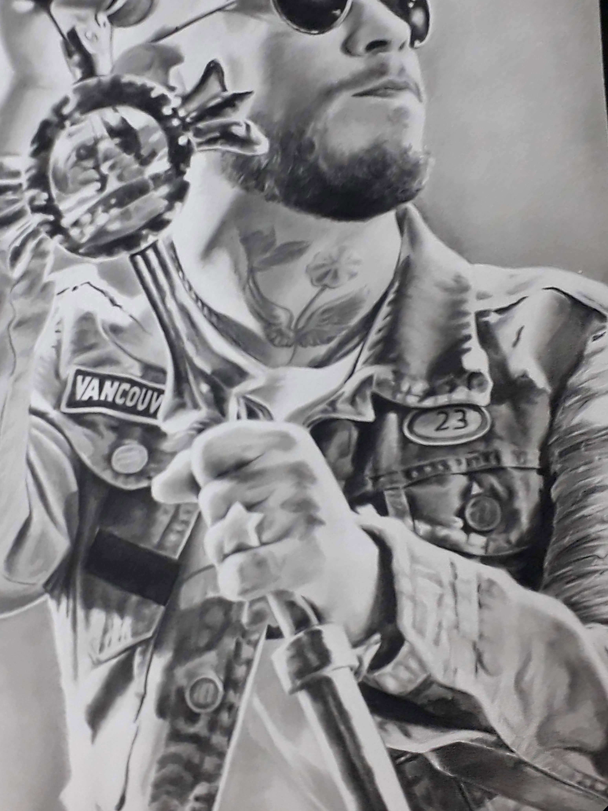
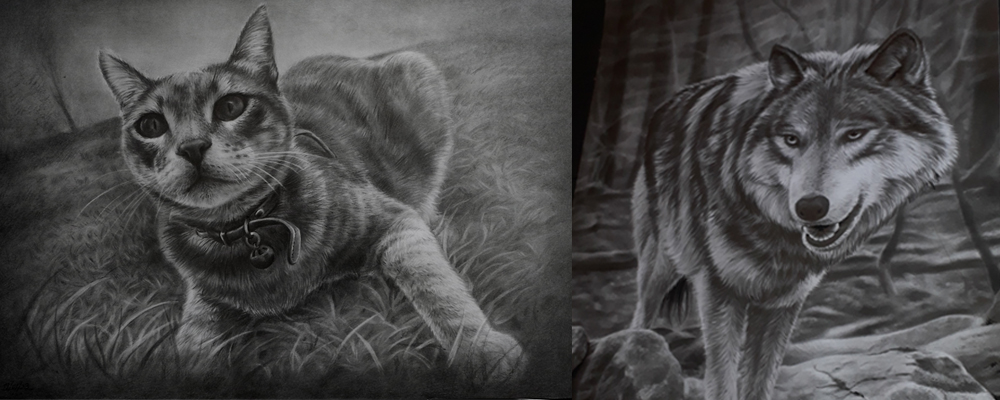
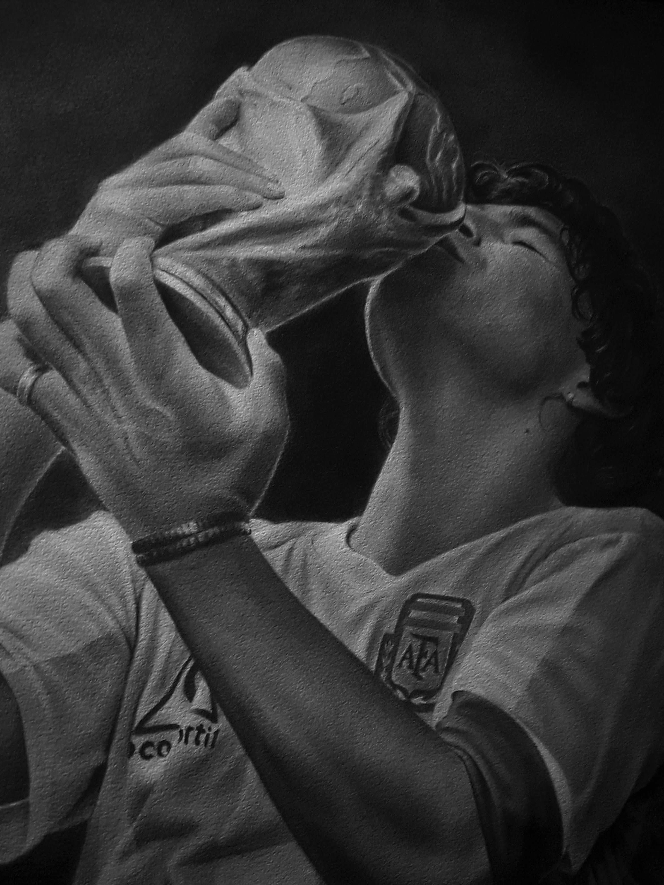

Retratos a lápiz hechos completamente a mano.

Galería de Trabajos Realizados
Cada obra es dibujada a mano alzada. Tocá cualquier obra para observarla en detalle en la sala de exhibición a pantalla completa.
De la Foto al Retrato Dibujado
Mirá cómo una fotografía cobra vida y sensibilidad a través del grafito a mano alzada.
Detrás de cada obra
No utilizo filtros digitales ni impresiones asistidas. Cada línea es trazada a mano alzada utilizando lápices de grafito de diferente dureza (desde 2H hasta 8B) y carboncillos seleccionados sobre papel libre de ácido de 300g.
Textura física que conserva el sombreado intacto sin amarillear.
Decenas de horas de trabajo para lograr profundidades de negro puro.

¿Cómo encargar tu retrato?
El proceso es sencillo y sin intermediarios. Te acompaño personalmente en cada paso.
Me enviás tu foto por WhatsApp
Analizamos juntos la resolución, la iluminación y el encuadre para asegurar el mejor resultado en el dibujo.
Elegimos el formato ideal
Te asesoro en las dimensiones (A4, A3 o A2) según sea un dibujo individual, de pareja o de tu mascota.
Creación y Envío Seguro
Trabajo la obra a mano alzada, te comparto fotos del avance si lo querés y la envío protegida a tu domicilio.

Hola, soy Alexis
Desde hace años me dedico a capturar miradas, gestos y recuerdos únicos a través del dibujo a lápiz. Para mí, hacer un retrato no es copiar una imagen: es comprender la luz, la expresión y la emoción de quienes están en ella.
Disfruto cada hora de trabajo en el taller frente al papel, cuidando cada detalle para que cuando recibas la obra terminada sientas la misma conexión y afecto que dio origen a esa foto especial.
Hablemos de tu retrato
¿Tenés una fotografía especial en mente? Escribime directamente por WhatsApp o correo electrónico para consultar dudas, tiempos de realización o solicitar presupuesto sin compromiso.